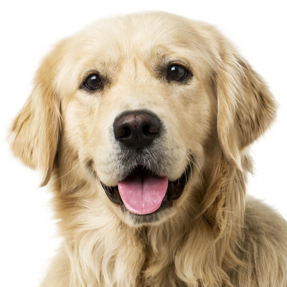

MaximusMiller2
Programmer - Creator of Sunkist's Palace, Source engine enthusiast, and member of many obscure fandoms.
RPGs:
- OFF fan,
- Earthbound (& Mother 3) fan,
- Deltarune (& Undertale) fan,
- Hylics fan,
Story games:
- Night in the Woods fan,
- The Walking Dead Game fan,
- Detroit: Become Human fan,
- Minecraft: Story Mode fan,
FPSs:
- Half-Life series (including -the beta-) fan,
- Fallout fan,
- Prey (2017) fan,
- Bioshock fan,
- ULTRAKILL fan,
- FREEDOOM fan,
- fn player, unfortunately,
- fn save the world player, Fortunately,
- Team Fortress 2 fan,
Puzzle games:
- Portal series fan,
- Baba is You fan,
- Superliminal fan,
Other Games:
- Viva Pinata fan,
- Don't Starve player,
- Cult of the Lamb fan,
- Project Zomboid player,
- Lethal Company fan,
- Source engine fan,
- Fan of a lot of source mods,
Things other than games:
- Tally Hall (+ JOE HAWLEY JOE HAWLEY + Hawaii: Part II) fan,
- WayneRadioTV fan,
- Programming
- Hammer World Editor
.MaximusMiller2::before {
background-image: url("../users/assets/MaximusMiller2/me-as-a-fox.png");
border-image-source: url("../images/border/leavey.png");
}
.MaximusMiller2{
background-color: rgb(30 80 49 / 65%);
color: #8cc5f4;
font-size: auto;
font-family: "Arial", emoji;
}